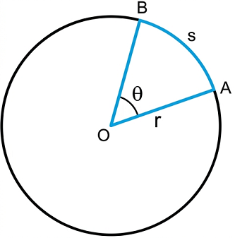
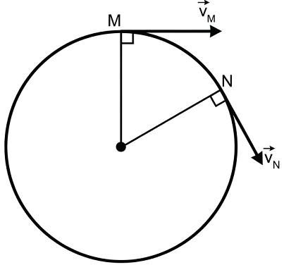
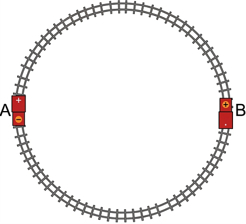

Trong cuộc sống hằng ngày ta gặp nhiều vật chuyển động tròn như: cánh quạt, kim đồng hồ, đu quay,...
Để xác định vị trí của vật chuyển động tròn ta có thể dựa vào quãng đường đi \( s \) (độ dài cung tròn) hoặc độ dịch chuyển góc \( \theta \) tính từ vị trí ban đầu.

Mối quan hệ giữa độ dài cung với góc chắn tâm và bán kính:
Trong Vật lí, người ta thường dùng đơn vị góc là rađian (rad).
? Câu hỏi 1:
Chứng minh rằng một rađian là góc ở tâm chắn cung có độ dài bằng bán kính đường tròn.
? Câu hỏi 2:
Tính quãng đường đi được khi vật chuyển động tròn có độ dịch chuyển góc 1 rad, biết bán kính đường tròn là 2 m.
? Câu hỏi 3:
Xét chuyển động của kim giờ đồng hồ. Tìm độ dịch chuyển góc của nó (theo độ và rađian):
Mặt đồng hồ được chia thành 12 giờ tương ứng với 360 độ (hay \(2\pi\) rad).
a) Mỗi giờ kim đi được: \(360^\circ / 12 = 30^\circ\). Đổi ra rađian: \(30^\circ = \frac{\pi}{6}\) rad.
b) Từ 12h đến 15h30 là 3.5 giờ. Góc quay là: \( 3.5 \times 30^\circ = 105^\circ \). Đổi ra rađian: \( 105 \times \frac{\pi}{180} = \frac{7\pi}{12} \) rad.
Định nghĩa:
Chuyển động tròn đều là chuyển động theo quỹ đạo tròn có tốc độ không thay đổi:
? Hoạt động:
Dựa vào việc quan sát chuyển động của kim giây quay đều trong đồng hồ để:
1. Các điểm nằm xa tâm quay (gần đầu kim) quét những cung dài hơn trong cùng thời gian nên có tốc độ (\(v\)) lớn hơn các điểm ở gần tâm.
2. Dù nằm ở vị trí nào trên kim, mọi điểm đều vạch ra cùng một góc ở tâm trong cùng một khoảng thời gian. Do đó độ dịch chuyển góc (\(\theta\)) là như nhau.
Tốc độ góc trong chuyển động tròn đều bằng độ dịch chuyển góc chia cho thời gian dịch chuyển. Đơn vị thường dùng: rad/s.
Mối liên hệ giữa tốc độ dài và tốc độ góc:
Ngoài tốc độ, tốc độ góc, trong chuyển động tròn đều người ta còn quan tâm đến các đại lượng như chu kì và tần số.
? Câu hỏi bài tập:
1. Kim đồng hồ:
2. Roto:
Tần số quay: \( f = \frac{125}{60} \) vòng/s. Tốc độ góc \( \omega = 2\pi f = 2\pi \cdot \frac{125}{60} \approx 13.09 \) rad/s.
Ta đã biết trong chuyển động thẳng vận tốc tức thời tại một thời điểm cho bởi \( \vec{v}_t = \frac{\Delta \vec{d}}{\Delta t} \).
Khi \( \Delta t \) rất nhỏ, vectơ độ dịch chuyển \( \Delta \vec{d} \) sẽ tiến tới trùng với tiếp tuyến với đường tròn. Do đó, tại mỗi thời điểm vectơ vận tốc tức thời sẽ có phương trùng với tiếp tuyến của đường tròn.
Trong chuyển động tròn đều, độ lớn của vận tốc tức thời không đổi nhưng hướng luôn thay đổi.


? Bài tập vận dụng:
1. \( T_{phut} = 3600 \) s, \( T_{giay} = 60 \) s. Tỉ số \( \frac{T_{phut}}{T_{giay}} = 60 \).
Vận tốc \( v = \frac{2\pi r}{T} \Rightarrow \frac{v_{phut}}{v_{giay}} = \frac{r_{phut}}{r_{giay}} \cdot \frac{T_{giay}}{T_{phut}} = \frac{4}{5} \cdot \frac{1}{60} = \frac{1}{75} \).
2. Trái đất quay 1 vòng/ngày \(\Rightarrow T = 24 \times 3600 = 86400\) s.
\(\omega = \frac{2\pi}{T} \approx 7.27 \times 10^{-5}\) rad/s.
\(v = \omega R = 7.27 \times 10^{-5} \times 6400000 \approx 465\) m/s.
3. Tốc độ là đại lượng vô hướng luôn không đổi (\(v = s/t\)), còn vận tốc tức thời là đại lượng vectơ có phương luôn thay đổi (tiếp tuyến quỹ đạo).
4. \( v = \frac{2\pi \cdot r}{T} \)
5. Từ A đến B là đi nửa vòng tròn. Độ lớn vận tốc luôn là 0.2 m/s nhưng hướng của vectơ vận tốc tại B bị đảo ngược (ngược chiều) so với tại A.
Bài 1: Một vật chuyển động tròn đều với tốc độ v = 10 m/s, trên quỹ đạo có bán kính r = 2 m. Tính tốc độ góc, chu kì và tần số của vật.
Bài 2: Một chiếc quạt máy quay với tốc độ 600 vòng/phút. Cánh quạt dài 0.5 m tính từ trục quay. Tính tốc độ góc và tốc độ của một điểm ở mép ngoài cánh quạt.
Bài 3: Một vệ tinh nhân tạo bay quanh Trái Đất ở độ cao h = 400 km. Biết bán kính Trái Đất R = 6400 km và chu kì quay của vệ tinh là 90 phút. Tính tốc độ dài của vệ tinh.